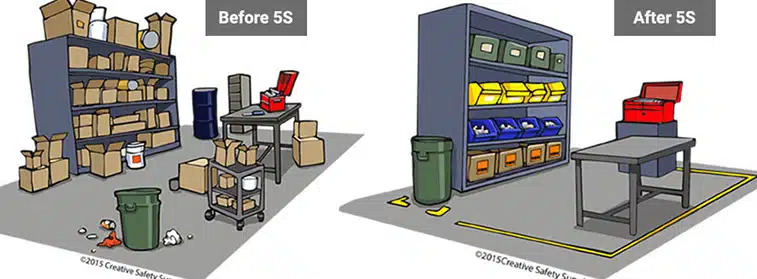

Introducción
Las 5S son una metodología japonesa que busca mejorar la organización y la limpieza en el lugar de trabajo. Implementar las 5S no solo ayuda a mantener el entorno limpio, sino que también impulsa la eficiencia y la productividad en las organizaciones. El liderazgo es esencial para asegurar que estas prácticas se adopten de manera efectiva y sostenida.
La metodología se basa en cinco palabras japonesas que representan cada uno de los pasos a seguir. Estas prácticas fomentan un ambiente laboral más agradable, seguro y productivo.
Las 5S
Seiri (Clasificación)
Separar lo necesario de lo innecesario. Identificar herramientas, documentos y materiales que se utilizan y eliminar lo que no se necesita.
Seiton (Orden)
Organizar el espacio de trabajo. Cada elemento debe tener un lugar específico para facilitar el acceso y el uso eficiente.
Seiso (Limpieza)
Mantener un entorno de trabajo limpio. La limpieza regular previene problemas y mejora la imagen de la organización.

Seiketsu (Estandarización)
Establecer normas. Documentar procesos y procedimientos para asegurar que la limpieza y el orden se mantengan en el tiempo.

Shitsuke (Disciplina)
Fomentar la autodisciplina. Promover un compromiso constante de todos los empleados con las prácticas de las 5S.

Beneficios
- Aumento de la productividad: La eliminación de desorden permite a los empleados centrarse en su trabajo.
- Reducción de costos: Menos desperdicios y un uso más eficiente de los recursos disminuyen los gastos operativos.
- Mejora en la calidad: Un espacio ordenado reduce la posibilidad de errores y mejora la calidad de los productos y servicios.
- Seguridad: La eliminación de desorden también minimiza los riesgos de accidentes en el lugar de trabajo.
- Mayor satisfacción laboral: Un ambiente limpio y organizado genera un mejor clima laboral.
- Fomento del trabajo en equipo: La colaboración y la comunicación mejoran en un entorno ordenado.
Implementación
Para implementar las 5S de manera efectiva, sigue estos pasos:
- Compromiso de la dirección: La alta dirección debe mostrar apoyo y compromiso hacia la metodología.
- Capacitación: Formar a todos los empleados sobre el concepto y la importancia de las 5S.
- Diagnóstico inicial: Evaluar el estado actual del lugar de trabajo para identificar áreas de mejora.
- Desarrollo de un plan: Crear un plan detallado que incluya objetivos claros y un cronograma de implementación.
- Monitoreo continuo: Realizar auditorías periódicas para asegurar el cumplimiento y realizar ajustes según sea necesario.
Recuerda que la clave del éxito radica en la participación activa de todos los empleados, así como en la comunicación constante entre los diferentes niveles de la organización.
Conclusión
El liderazgo en la implementación de las 5S es fundamental para el éxito y la sostenibilidad de esta metodología en cualquier organización. Un líder efectivo no solo debe promover estas prácticas, sino también involucrar a todo el equipo en un proceso de mejora continua que beneficie a la empresa en su conjunto. La implementación de las 5S puede transformar un ambiente laboral, aumentar la eficiencia y llevar a una cultura organizacional más saludable.